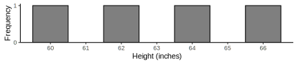

8|SAMPLING

Sampling error
- Sampling Error
- Discrepancy between a sample statistic and the population parameter

Sampling error
- Discrepancy between a sample statistic and the population parameter
- E.g. Opinion polling
- see Pew explainer

Example: height distribution


Example: height distribution
| Sample | X1 | X2 | M |
|---|---|---|---|
| 1 | 60 | 60 | 60 |
| 2 | 62 | 60 | 61 |
| 3 | 64 | 60 | 62 |
| 4 | 66 | 60 | 63 |
| 5 | 60 | 62 | 61 |
| 6 | 62 | 62 | 62 |
| 7 | 64 | 62 | 63 |
| 8 | 66 | 62 | 64 |
| 9 | 60 | 64 | 62 |
| 10 | 62 | 64 | 63 |
| 11 | 64 | 64 | 64 |
| 12 | 66 | 64 | 65 |
| 13 | 60 | 66 | 63 |
| 14 | 62 | 66 | 64 |
| 15 | 64 | 66 | 65 |
| 16 | 66 | 66 | 66 |
Sampling distribution (\(n = 2\))

\(p(M < 61) =\ ?\)
\(p(62 \le M \le 64) =\ ?\)
\(p(M > 65) =\ ?\)
Example: height distribution
- Now we can calculate variability of sample means
- Since we obtained every sample mean
- Use population SD formula
| \(X\) | \(X-M\) | \((X-M)^2\) |
|---|---|---|
| 60 | -3 | 9 |
| 61 | -2 | 4 |
| 62 | -1 | 1 |
| 63 | 0 | 0 |
| 61 | -2 | 4 |
| 62 | -1 | 1 |
| 63 | 0 | 0 |
| 64 | 1 | 1 |
| 62 | -1 | 1 |
| 63 | 0 | 0 |
| 64 | 1 | 1 |
| 65 | 2 | 4 |
| 63 | 0 | 0 |
| 64 | 1 | 1 |
| 65 | 2 | 4 |
| 66 | 3 | 9 |
| \(M = 63.00\) | \(SS = 40.00\) | |
| \(\sigma^2 = 2.50\) | ||
| \(\sigma = 1.58\) |
Variability

Variability

Variability: heights sampling dist
| Sample | X1 | X2 | M |
|---|---|---|---|
| 1 | 60 | 60 | 60 |
| 2 | 62 | 60 | 61 |
| 3 | 64 | 60 | 62 |
| 4 | 66 | 60 | 63 |
| 5 | 60 | 62 | 61 |
| 6 | 62 | 62 | 62 |
| 7 | 64 | 62 | 63 |
| 8 | 66 | 62 | 64 |
| 9 | 60 | 64 | 62 |
| 10 | 62 | 64 | 63 |
| 11 | 64 | 64 | 64 |
| 12 | 66 | 64 | 65 |
| 13 | 60 | 66 | 63 |
| 14 | 62 | 66 | 64 |
| 15 | 64 | 66 | 65 |
| 16 | 66 | 66 | 66 |
Sampling distribution (\(n = 2\))
\(\sigma_M = \dfrac{\sigma}{\sqrt{n}} = \dfrac{2.24}{\sqrt{2}} = 1.58\)